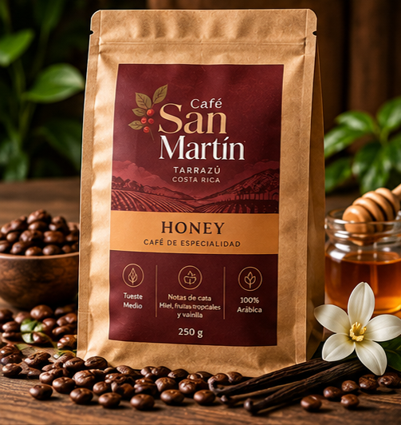
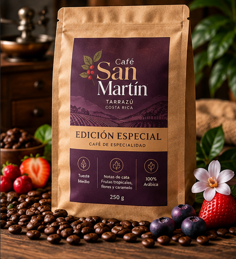

Café Clásico
Una propuesta equilibrada y aromática que resalta el sabor tradicional del café de Tarrazú.
Origen: Tarrazú, Costa Rica
Tueste: Medio
Notas de cata: Chocolate, caramelo y nueces
Presentación: 250 g
₡4.500
Descubrí nuestra variedad de cafés, cultivados con dedicación en las tierras de Tarrazú, Costa Rica.
← Volver al catálogo
Una propuesta equilibrada y aromática que resalta el sabor tradicional del café de Tarrazú.
Origen: Tarrazú, Costa Rica
Tueste: Medio
Notas de cata: Chocolate, caramelo y nueces
Presentación: 250 g
₡4.500

Una variedad especial con carácter intenso, ideal para quienes disfrutan sabores profundos.
Origen: Tarrazú, Costa Rica
Tueste: Oscuro
Notas de cata: Cítricos, frutos rojos y cacao
Presentación: 250 g
₡6.500

Un café dulce y complejo, con notas naturales que resaltan su proceso de beneficiado.
Origen: Tarrazú, Costa Rica
Tueste: Medio
Notas de cata: Miel, frutas tropicales y vainilla
Presentación: 250 g
₡6.000

Una alternativa de café con un perfil suave, inspirada en el cultivo sostenible.
Origen: Tarrazú, Costa Rica
Tueste: Medio
Notas de cata: Frutas secas y chocolate
Presentación: 250 g
₡5.500

Una experiencia diferente con notas florales y frutales para quienes buscan nuevos sabores.
Origen: Tarrazú, Costa Rica
Tueste: Medio
Notas de cata: Frutas tropicales, flores y caramelo
Presentación: 250 g
₡7.500
Origen:
Tueste:
Notas de cata:
Presentación: